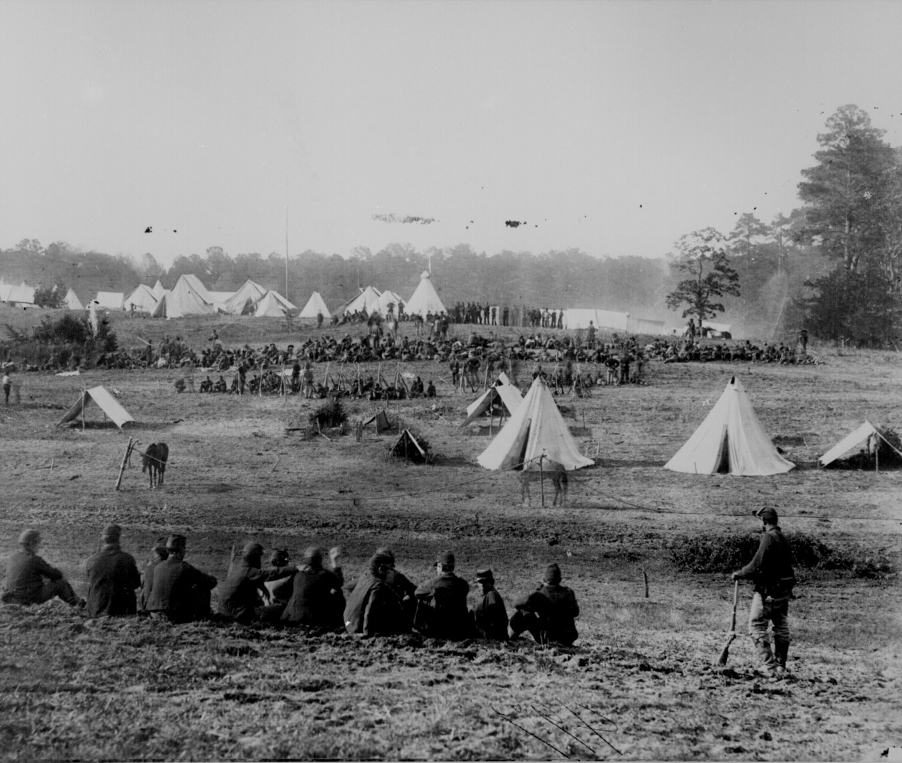
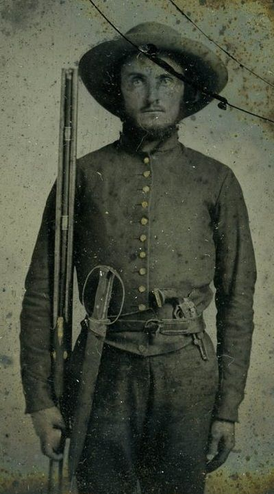
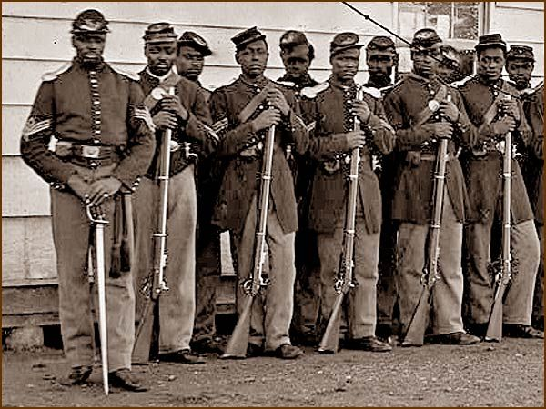
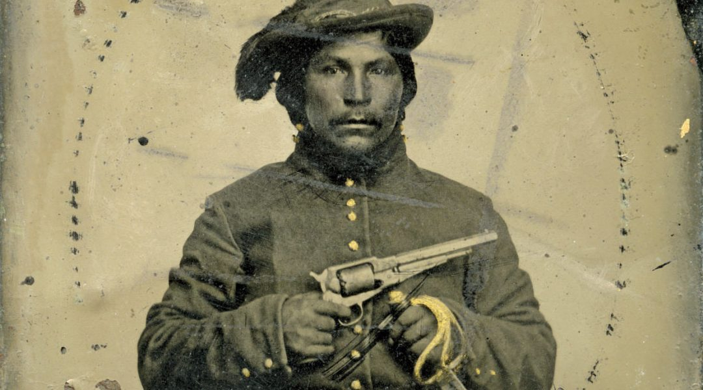
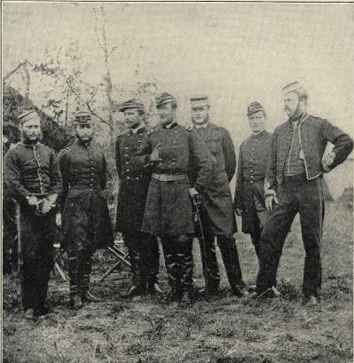
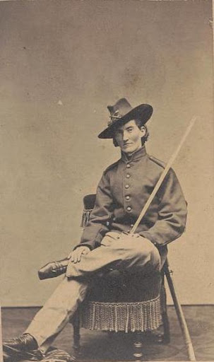

The Union had a significant resources advantage over the Confederacy, enabling them to
outpace the Confederates in producing railroads, ships, heavy and light weaponry, as well as other war material. Their advantage proved useful for engaging in an attrition strategy to diminish and eventually control the Confederacy.
Data Source: Historical Statistics of the United States
Legend: Union - blue, Confederate - gray

×
text here, relevant image above
×
Civil War uniforms often varied greatly from unit to unit. Here are just two uniform variations from both sides:
Hover over parts of the infantry soldier to see more information about his uniform.

×
In regards to pay, both sides had a somewhat exponential increase in soldier's pay as you go up the rank ladder.
Using both side's pay grade system, if we, acting like the government, allocated and distributed $x of dollars to soldier's pay, the
following graph would be an estimated distribution:
The graph above accounts for the number of soldiers in each rank, estimating the distribution of soldiers among the rank hierarchy
to be comparable to the current United States military. Here we see the mid-ranked soldiers sharing the majority
of the total salary being allocated. It's important to note that the salary allocation was based on the assumption
that lower-ranked soldiers were paid when they were supposed to. However, oftentimes due to the
intensity of combat and logistical challenges brought about by the sheer size of the forces,
payday was often not sent to the troops until much later than assigned, if they were lucky.
In regards to the prior profession of much of these enlisted soldiers, Confederates had more people as farmers due to
the society of the South being more agrarian than the North.
×
The war's sheer brutality resulted in many soldiers being driven away from and drawn towards faith. While most were Christian, some were Jewish
×

African Americans,

Native Americans

Foreigners: Sent observers, immigrants contributed greatly to war effort

Women sometimes dressed as men to join the battlefield, as they were barred from enlisting.
About
The image is of Tredegar Ironworks, which was a Confederate factory in Richmond.
It's strategic importance, especially with the resource disadvantage they had,
was one of the driving factors behind Richmond becoming the capital.